泰拉瑞亚战士全流程笔记
Table of Contents
免责声明：所有涉及具体的建筑设计之类的内容均基于个人喜好和经验，不喜勿喷
本篇的多数内容整理自网上帖子、官方wiki、B站视频等，部分图片由编者提供
编者使用版本为1.4.4
很好，你泰拉145终于更新了，联动内容一大堆，战士实力依旧甚至还有加强，各种体验优化妙哉妙哉，但也又有点美中不足的地方……由于145还不稳定还有可能会有后续更新，所以说笔记只作部分更改
1. 开局前的准备
1.1. 熟记键位
| 键位 | 功能 |
|---|---|
| WASD/SPACE | 基本移动 |
| ESC | 背包 |
| 1-9 | 快捷栏 |
| E | 勾爪 |
| R | 坐骑/矿车 |
| B | 快速增益 |
| H | 磕回血药 |
| M | 大地图 |
| Enter | 聊天界面 |
| +/- | 视角缩放 |
| Shift+F9 | 切换光照类型 |
| Tab | 切换小地图显示类型 |
| Shift | 按住智能切换物品 |
| Ctrl | 切换智能光标 |
1.2. 游戏设置
- 打开自动挥舞
1.3. 使用好的汉化包（Steam创意工坊）
- Potralia的个人汉化
- 逐梦蝶工作室个人汉化
1.4. 创建世界
战士，只建议玩猩红世界，以获取站神必备物品。（腐化，前期地形比较难探，且没有站神小玩具）
- 大小：中世界
- 感染：猩红
2. 肉前流程
2.1. 开局
- 下挖一小坑标记出生点，左右撸树平整下场地，可以丢铜短剑给史莱姆好捡个NPC压刷怪
- 搭建如图示卡怪单向墙左右各一部。人可先上外侧位于5格高的平台上至墙顶再翻入。
- 两堵墙搭可以得近点防怪刷里面（也方便后来刷事件），有3个NPC后会形成城镇抑制刷怪
第一天剩余时间抓紧时间探索世界或者搭建基地（npc屋）再或是刷史莱姆拿钱和凝胶
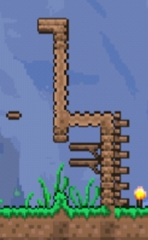
- 原理：
- 僵尸（战士）AI特性：
- 其第二第三格有平台时会尝试跳起来跳到平台上（如果玩家高于平台就会上去，反之就会下来）
- 第四格（即其头顶的一格）有平台时则不会跳
- 平地上放一格方块会直接从头上跳过
- 史莱姆：不会下平台（沙漠的秃鹫也一样）
- 更新：目前有更好用的c型槽可用，虽然搭起来没这么快但很好用，详细请看Reference
2.2. 基地/NPC监狱
- 基本框架：在出生点上方搭三层间隔4图格（即开局放置极限高度位置）的平台（防止怪物跳上来），在最上方的那一阶平台开始左右扩展。预留以出生点那格为中心的3格宽作过道，于两侧各搭建NPC房屋4-6间（以基本的卡怪墙为左右边界）
- 款式（如下图）：上层4宽4高（用实体方块围外面），下层4宽3高（用平台围），中间隔以3实体方块和1火把（联通上下层），上层内部再摆上工作台和椅子，并在火把处向上铺至少1格墙即可成屋（此房屋很“合适”）
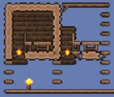
原理:
- 具有60格总面积（包括外边框）
- 具有：
- 光源：火把
- 家具：桌子（工作台）、椅子（床）
- 门（平台，放房间内部也算）
- 人工背景墙（横竖小等于4*4的破洞会被作为窗户处理）
- 足够的站立点（中间的三格实体方块）
- 房屋中心（就是有NPC头像棋子的位置）处于非邪恶环境内
- 向日葵可以抵消邪恶计分
- 房屋对邪恶环境的判定和玩家的判定不太一样
- 注意：NPC基于检测房间墙壁生成，墙铺得少NPC来得慢。有能力的建议多铺点墙
- 注意：只有前面没有物块或家具遮挡背景墙才是有效的，工作台、火把、椅子都会冲掉后面背景墙的有效性
- 145更新：在新版本增加了可视化的房屋建造提示（不过引导性也没那么好）。npc可以无需建造房屋即可到达（倘若晚上了仍未建好房子供其入住则会离开）
建议先建几间房引奸商进来，屯钱买镰刀割干草作垫脚和建筑方块（前期)。钱可以通过刷史莱姆或者僵尸屯(50银足以勾引奸商)，怕死可以直接把钱放在地上不会丢
2.3. 探险/探图
把家周围的 地表 探下，遇怪优先以躲避和堵怪为主，针对不同环境的内容总结如下：
- 通用：小心摔落伤害，平地放方块或者平地小跳可勾引僵尸从头上跳过
- 森林：绕过史莱姆
- 雪地：相对安全，易于探索（包括地下，详见下面“关于更多的地形”一节）
- 沙漠：尽多地挖仙人掌做仙人掌剑仙人掌套，秃鹫和史莱姆一样不会下平台
- 丛林：对技术没自信的建议撤
- 猩红：见了就要跑的（对技术没自信的建议撤）
探索小技巧:往返床
利用系统对房屋判定，自动开关门和沙子自动下落的特性，将房屋造成门打开时房间失效（判定与NPC房类似，不过不需要判断是否有椅子和邪恶环境罢了），人使用魔镜（或回忆药水）会传送回初始出生点，然后门自动关闭，房间生效，人再传送会回到设定出生点。（用于前期探索时快速往返）便捷的模板房间如下:
使用方式:人站在门前，门自动打开（需要设置中启用相关功能，默认是开着的），在非床侧门上方放置一个沙子使房间失效，用魔镜传送即可
如果探索过程中遇到丛林和邪恶环境堵家门口的眉笔情况，可以尝试快速翻越过去（或者取巧用绳子上太空用伞飞过去），碰碰运气看看它刷不刷怪。一旦越过去就立刻建个往返床作为基地。若条件充足则可以尝试建立相应的城镇之类的（雪地环境塞雪地晶塔）
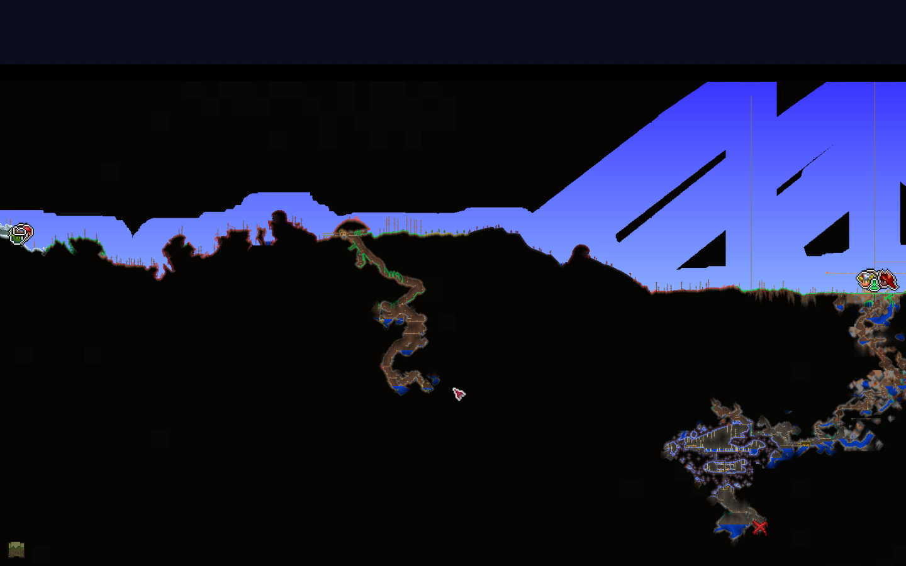
Figure 1: 眉笔运气：左边猩红堵门，右边丛林堵门
在探险过程中要留意下有没有攀爬爪和鞋钉（花后重要道具），金属带扣（新月可以找骷髅商人买），水上漂靴（泰拉靴合成材料之一）
2.4. 挖矿
(此过程相对漫长且时刻穿插)
没有存钱罐下矿记得清钱，有则随身带一个，矿工帽对下矿也挺有帮助的。选址建议在普通地形（雪地也不错）探矿，相对安全。如果家附近有地表矿道建议顺其而下（不过要小心摔落伤害），多避战，多挡怪，前期战士弱鸡打不过。采矿的同时宝石也别放过，挖去做钩爪提升机动力（越早越好，搭配干草块，探险效果较好）（有钩爪就可以在一格宽的通道里上下移动）。遇到发光蘑菇地可以看看有多少生命水晶，把血量上限拉上去。
- 矿物:
- 肉前自然矿1:铜锡;铁铅;银钨;金/铂金
- 肉前邪恶矿:魔矿/猩红矿（钧需要金一级稿或者炸弹）
- 肉前特殊矿:陨石;黑曜石;狱岩矿（需要邪恶镐）
- 肉后灵矿:钴矿/钯金矿;山铜矿/秘银矿;精金矿/钛金矿
- 肉后其他矿:（神圣锭由新三王掉落）;叶绿矿（可合成蘑菇锭，幽灵锭）;夜明矿
稿力:决定敲击方块次数，矿级越高镐力越高，能挖的方块也越多。（不等于挖掘速度，肉前银镐最快，肉后蘑菇挖矿爪(世纪之花后)最快）
若遇到发光蘑菇地可以多搞点发光蘑菇，他们是50血药瓶合成成100血药瓶的必要材料
2.5. 关于特殊事件
在探索到一定程度，拉到一定血量上限后就会发生的事。
- 120HP：每晚有1/9概率发生血月，（145新限制/内容：）开始下雨/雷暴雨，雷雨天气会打雷
- 140HP：防御高于8且为肉前时概率发生史莱姆雨
- 200HP：摧毁至少一个暗影珠或猩红之心每天有1/3概率发生哥布林入侵
200HP：防御高于10且城镇npc多于3且克眼前每晚1/3概率召唤克眼
小贴士：boss提示在7:30p.m.出现，在8:51p.m.正式召唤
2.5.1. 关于雷击
针对玩家和敌怪，伤害很高要小心，已知原要打到树上的雷可能被敌怪或玩家引走，其余机制不明
2.5.2. 过血月/哥布林袭击
向上延伸卡怪墙，和上层NPC房屋结合（如图），在事件期间堵住出口，然后在地上用手雷慢慢向左右清怪即可。
目标:取钱币槽（工具物品，可“召唤”猪猪存钱罐，可用于防止死了钱掉地上，或者背包满时把东西放进去节约空间）
注：如果已经拿到勾爪了就可以把墙改成竖直的，方便自己能通过勾爪爬进去
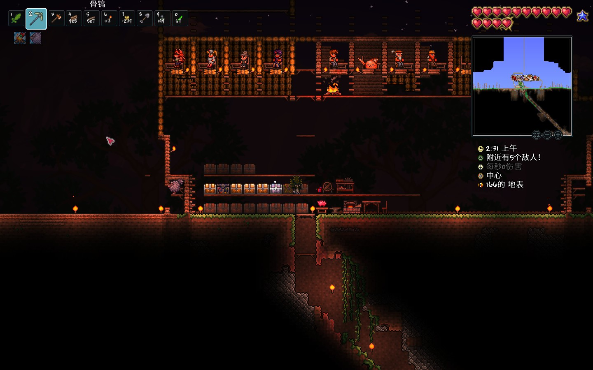
注2：若有条件实际上这时候就可以开装地表刷怪场了，详细相关内容可见“肉前准备工作与现状概述->三套刷怪场”中相关内容
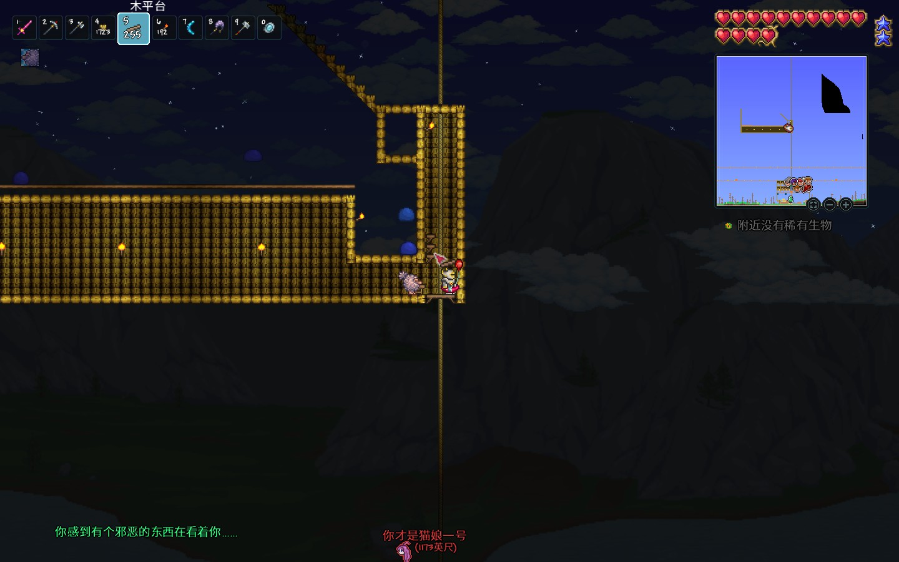
Figure 2: 开荒过程中根据实际需求搭建的刷怪场，可见其中并未过克眼
2.5.3. 打史莱姆王
召唤方式:杀够足够的史莱姆或者用材料去祭坛合成召唤物
平地拉或者用高空短平台通过下平台勾引下去用手榴弹或者其他武器削。目标:取史莱姆ang。
2.5.4. 过克眼（主线BOSS）
在家顶准备2层钩爪能够到的战斗平台，铺长点，摆上增益家具（篝火加生命回复，猫雕加防御，心灯加生命回复，向日葵加移速并降低刷怪率），换上防御最高的套装，有条件可备些廉价饰品上防御（如绳子+染料反复微光重铸），拿手榴弹，悠悠球，回旋镖，星怒等（远程）武器干就完了（武器能有就有）。
（打完还缺钱可以多打几次卖猩红矿）
2.6. 关于更多的地形
注意：探索和主线进度是同时进行的，所以说不是推完主线再去探索下述地形之类的。
2.6.1. 雪地
雪地物产不算丰富，但是相对比较安全（环境明亮没有什么穿墙怪），可算是第二甚至是第一挖矿选择，宝箱可取其中冰雪刃、冰回旋镖、和溜冰靴，雪地也较易挖出较多宝石以获取或升级勾爪。
2.6.2. 空岛
空岛生成时有概率水池溢出落到地面，所以见到地上的疑似非正常生成水池时可以搭绳子绳子上去找空岛。如果绳子足够多且有伞则可以尝试用绳子搭根"擎天柱"上天用伞滑翔寻找，亦或者是在高空用铁轨水平方向查找（建议和床搭配）。如果有重力药水那就省事了。（绷不住的话可以尝试用如Terramap之类的地图查看器查图）
小贴士：云免疫摔落伤害，不用怕用重力药水在空岛摔死，只要保持一定的高度就行
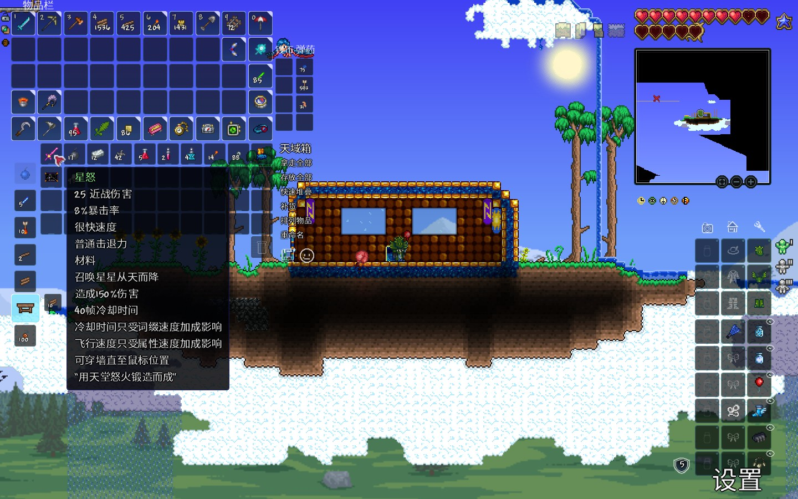
Figure 3: 大师档死好几次摸到星怒的我
探索空岛主要目的:获取星怒，马掌和气球。
2.6.3. 沙漠
有星怒后探索地下沙漠就方便了，破仙人掌球掏生命水晶，寻找高尔夫球手。建议花点钱买炸弹雷管炸直通车，效率会高不少，也相对安全点。
目的:获得海螺（传送海边），凿子（挖掘速度），猫雕（加防御）
145的地下沙漠能够刷新出设么龟之类的东西，能够召唤出来自动挖矿（用来全自动挖三格宽直通车非常合适，拿来探沙漠这种需要垂直移动的地形也很有用，四舍五入就是在挖地狱直通车的双手：“I'm free!”）
2.6.4. 丛林
主要目的:搜集丛林孢子15，藤蔓3，毒刺12以做草剑（真有了那就莽了）;
次要目的:取再生法杖
再生法杖在145惨遭削弱，无法直接收割非种植盆上未成熟的草药并获得种子（不过疑似可以手持再生法杖使用钩爪勾住物块收割，暂不确定）
相对好点的：再生法杖和再生之斧在种植盆上收割草药时自动种回去且不消耗背包的种子
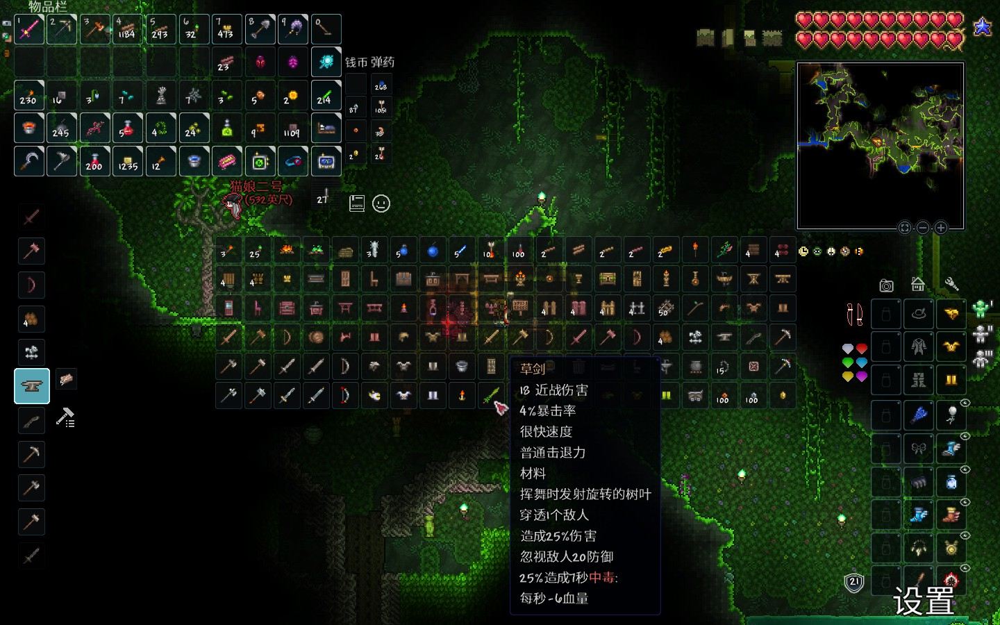
Figure 4: 丛林宝物：草剑
2.6.5. 微光
在丛林侧海边（可以通过海螺传送）和正常地形的交界处（大世界的位置稍微更加不确定些）向下挖或用雷管炸出下滑通道，找到微光，堵下两头防怪，然后迅速建NPC屋把NPC般进来，用10金买晶塔（微光拆解合成能省很多钱）
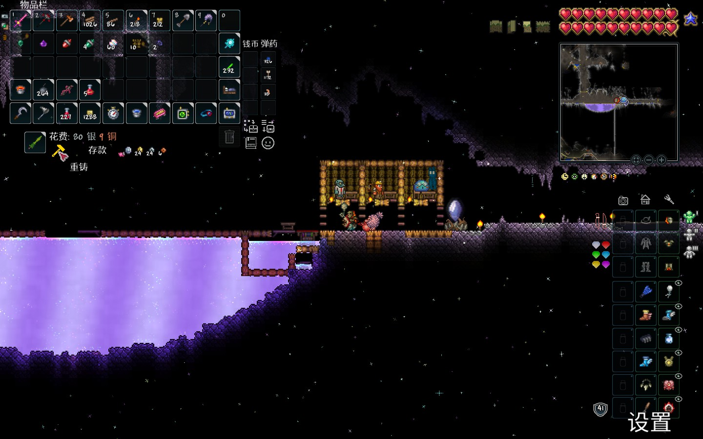
Figure 5: 微光城镇环境示意
微光重铸设计：旁边挖个沟下去，摆上单向墙。
- 重铸：泰拉的武器工具和饰品是具有前置词缀的，他们可以为其提供相关加成。而对于战士而言：
- 武器的最佳词缀一般是传奇
- 部分武器可能是神级或者恶魔（神级较恶魔仅多了加击退）
- 饰品最佳词缀是护佑（+4防御力）
- 防御系统：普通/经典模式下，每1防御减免50%伤害，专家减免75%，大师减免100%
- 每次受伤至少受1点伤害不能为0（不能做到无伤）
- 微光功能：
- 拆分物品为合成原材料（分解药水不能100%返还草药）
- 145
更新（大削）：酒馆老板出售的麦芽酒不能再被微光拆解为玻璃，好用美观廉价易于获得的伟大建筑材料不再易于大量获得，未知以后是否会作出调整。
- 145
- 投币池：丢硬币进去增加运气
- 降级物品：例如矿物降级分解
- 墙壁危险化：将安全的人工背景墙转化为能刷怪的危险背景墙
- 物品转化：
- 僵尸臂->屁垫（整蛊坐垫）
- 天使雕像->以太天界塔
- 生命水晶->活力水晶（永久加人物生命恢复速度）
- 生命果->神盾果（永久人物加4防御）
- 任意水果->仙馔密酒（永久增加人物挖掘速度）
- 魔法书（巫师购买）->先进战斗技术：卷二（增加NPC防御）
- 商贩帽（杀死游商掉）->商贩背包（增加游商售卖商品）
- 蘑菇草种<->丛林草种
- 炼药桌<->施法桌
- 岩浆石<->熔岩护身符
- 十字盾的子集合成材料
- 拆分物品为合成原材料（分解药水不能100%返还草药）
2.6.6. 猩红
猩红没有什么矿，如果还没有去敲心脏（用锤子敲或者用炸弹炸）就去敲一下，好出哥布林袭击，主要是要搭点平台为打可脑和肉后敲祭坛作准备
2.7. 过克脑
2.8. 骷髅王
- 套装准备：先探下地狱，用黑皮药水3挖狱岩矿（需要65x3=195的狱石，65个黑曜石），再挖点黑曜石做狱岩套及火山大剑（要用到地狱熔炉，需要探索遗迹获得）。
- 武器准备：星怒、草剑、火山、烈焰回旋镖（最主要）
- 饰品：克盾、克脑、适量机动性饰品、廉价饰品（叠护佑）
场地准备：地牢斜坡搭个小房间放张床（用于快速复活、加速时间），在地牢门口上方搭2-3层约一屏幕长的战斗平台，准备好向日葵、猫雕、篝火等（间隔高点）
一阶段躲头用火山（换血）打手（两轮左右就可以清掉手），然后同向绕圈走位用烈焰回旋镖打头（通过史莱姆ang的上下移速或者跑鞋克盾冲刺等横向移动拉开距离的同时躲开螺旋追踪的骷髅头），滚筒洗衣机时平地跑即可（要是懒得切坐骑可全程带史莱姆ang）（不过横向机动性堪忧，有烈焰回旋镖时最好还是保持距离优先）
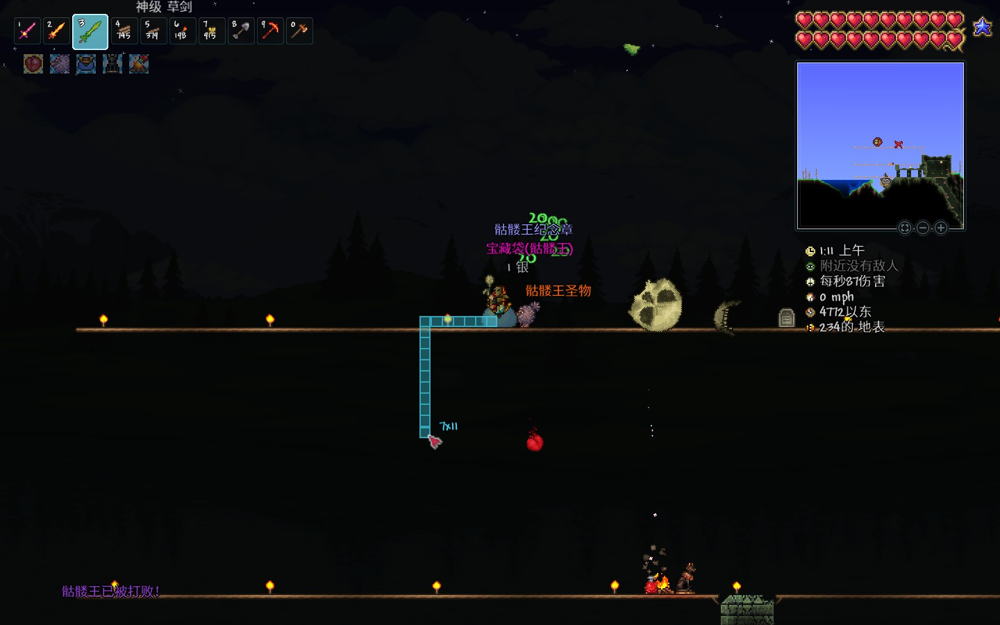
2.9. 地牢与合成装备
- 刷怪取金题钥匙开箱取村正，回家合成把永夜剑（需要祭坛，火山，草剑，邪恶剑，村正）
- 刷怪取金题钥匙开箱取钴护盾，回家合成黑曜石护盾（需要黑曜石->黑曜石骷髅头）
- 找到机械师
- 找到猩红宝箱位置并用火把围两圈标记
- 刷够足够的骨头合成虚空袋即可。
- 如果懒得慢慢刷金钥匙可建刷怪场刷
2.10. 其他BOSS
2.10.1. 蜂王
骷髅王后配置可以直接野战蜂王（丛林找蜂巢）（无需药水），注意下就行了
2025.01.22补充：就算是骷髅王后配置站撸蜂王还是有点悬的，最好还是跳下大绳
2.10.2. 雪怪
祭坛合成召唤物或者等待自然生成
反正不会立刻挂，大不了搭上条命再去站撸（或者是床设置重生点海螺切到海边回血再回去），去把那个宠物（骨眼）打出来即可（能当随身存钱罐，巨好用）。
- 召唤物需要小学怪皮毛和晶状体，均可在刷怪场刷
刷怪场提示：刷小学怪需要雪地环境
3. 肉前准备工作与现状概述
此为战士肉后快速快乐发展之基，因此至关重要。当然，这里只是一个总结性的概述，其中的不同内容可以依据具体情况自行决定施工步骤。
3.1. 建筑方块改变
如果缺建筑方块可以找酒馆老板买麦芽酒去微光分解成破璃（纯个人喜好，用玻璃只是因为方便）（同上，145已经ban了）
3.2. 初步形成晶塔网络与NPC编排
3.2.1. 晶塔安排（个人常用）
- “|”意思是两边的NPC间隔稍微远点，使得重要npc旁边的25格内最多只有一个npc 以形成独居奖励+喜爱的npc buff
144旧版方案:
145版本方案暂未出炉（毕竟还没玩），相较于144，145增加了微光晶塔和地狱晶塔（洞穴晶塔终于不用再分身乏术了，不过就我144培养的习惯来看新增的晶塔作用不大就是了）
换取晶塔的方法：把军火商和护士单独放在一起（旁边不要有其他npc），军火商会出售晶塔
解释和新版本更新：
144的晶塔出售要求npc具有一定幸福度，军火商和护士相互喜欢，单独把它们放在一起独处就可以满足晶塔的出售条件
145的晶塔出售不再有幸福度要求，而且幸福度数值可直接查看
注：需要小心些防止肉后猩红感染带刷到自己的某个城镇，需要用向日葵等做好防护
3.2.2. 部分NPC信息
- 正面影响排序：偏爱>喜欢>0>反感>憎恨
- 快乐上限：买价七五折，卖价x1.33
- 厌恶上限：买价x1.5，卖价x0.67
- 晶塔条件：买价x0.9
- 影响因素（乘算）（可能会过时）
- 坐标原点为npc房屋旗子下面的方块
- 25格子内只有2个NPC触发奖励
- 25格子内超过3个NPC触发惩罚
- NPC间喜好判断范围：25格子
- 在混合生物群系中喜欢偏爱的群系优先起作用
- 语言解释：
- “刷出”意味着需要与其交谈
- “入住”意味着检测房屋自然到达
- 没有以上关键词则默认为“入住”
- 空间限制，只列出常用、有用的信息
- 爆破专家：玩家拥有手榴弹、炸弹、雷管
- 偏爱: 酒馆老板
- 喜欢: 地下, 机械师
- 反感: 海洋, 军火商, 哥布林工匠
- 出售: 手榴弹、炸弹、雷管
- 哥布林工匠：哥布林入侵后洞穴刷出
- 偏爱: 机械师
- 喜欢: 地下, 洞穴, 地狱, 染料商
- 反感: 丛林, 服装商
- 憎恨: 发型师
- 功能: 重铸饰品、出售工匠作坊等
- 机械师：骷髅王后地牢刷出
- 偏爱: 哥布林工匠
- 喜欢: 雪原, 机器侠
- 反感: 地下, 洞穴, 地狱, 军火商
- 憎恨: 服装商
- 出售: 电路相关（可合成宏伟蓝图）、分线盒（凭空放置方块用）
- 派对女孩：拥有14名npc后1/40概率入住
- 喜欢: 神圣, 发型师
- 反感: 地下, 商人
- 憎恨: 收税官
出售: 泡泡（肉后）、猪笼彩罐(->培根（大幅饱食）)（肉后）
145猪龙彩罐不再能够开出培根，南瓜派也被降级，属于是物美价廉的大饱食被ban了
- 树妖：三王后（克眼、世吞、克脑、骷髅王）
- 喜欢: 丛林, 巫医、松露人
- 反感: 沙漠, 高尔夫球手, 渔夫
- 出售: 蘑菇草种（位于丛林时）
- 酒馆老板：克脑或世吞后随机刷出
- 出售: 麦芽酒(->玻璃杯->玻璃)
- 商人：玩家背包有50银
- 渔夫：海洋刷出
- 军火商：玩家拥有子弹或枪械
- 护士：玩家>=100HP且商人在（不卖东西）
- 发型师：蜘蛛洞刷出
- 画家：拥有至少8名城镇npc（又名油漆工）
- 巫医：蜂王后
- 服装商：骷髅王后
- 高尔夫球手：地下沙漠刷出
- 染料商：玩家拥有染料或其制作材料
动物学家：玩家解锁了10%图鉴（54条）
=======以下为肉后npc========
- 蒸汽朋克人：新三王之一后
- 出售: 环境改造枪
- 松露人：地表蘑菇地可用房屋入住
- 出售: 蓝溶液
- 巫师：洞穴刷出（与巫医区分）
- 出售: 冰雪魔杖（凭空放置方块用）
- 税收官：地狱用净化粉净化刷出的痛苦亡魂
- 机器侠：世花后
- 圣诞老人：雪人军团击败且是圣诞节
公主：世界中有了所有npc（除了城镇宠物和圣诞老人）
======其下是城镇宠物========
| 图片 | 名称 | 入住条件 |
|---|---|---|

| 侍卫史莱姆 | 扔铜头盔或铜短剑给史莱姆转换成 |

| 书呆子史莱姆 | 史莱姆王 后 |

| 酷酷史莱姆 | 在天然的派对激活期间入住 |

| 长者史莱姆 | 金钥匙解锁洞穴层刷出的老旧摇摇箱 |

| 笨拙史莱姆 | 打破太空的笨拙气球史莱姆气球 |

| 天后史莱姆 | 将闪耀史莱姆气球扔进微光转换成 |

| 暴躁史莱姆 | 可以在血月时钓到 |

| 神秘史莱姆 | 用净化粉净化丛林刷出的神秘青蛙转换成 |
=====以下是其他不入住npc=====
- 旅商：有两个其他npc在上午(4:30-12:00)以22.12%到达
- 出售创造之手部分合成原料
- 杀死会掉落商贩帽，可丢微光变成商贩背包增加旅商售卖物品
- 骷髅商人：洞穴
基于月相出售物品
3.3. 推荐的城填样式与部分特殊基地安排
- 一般共性：NPC屋悬空于地表，可平整下地面，一般距地15格即可
- 出生点：边界使用单向墙/卡怪墙（如果已经有了地表刷怪场那可以拆掉换成竖直的墙），内建空间一侧储物（放箱子），另一侧放床、工作站等家具，出生点上下为贯通上下且有不可感染方块围挡保护的直通车（通上通下，防止肉后怪突袭）
- 丛林：丛林的NPC屋需改造为下底封上的样式（反正就是围起来），防止肉后从林刷"新三王"(丛林龟等)，高度适当抬高，但别脱离环境。如果有需要，可以在从林新增两条地狱直通车。
3.4. 初步建成各群系的鱼池
鱼池只需300格即可没有渔力debuff （如果找不到合成猛虎攀爬装备的材料那钓鱼就会成为唯一出路）
需求:丛林地表，沙漠地表，天空池，雪地地表，森林地表（非必须）
注：当然如果运气非常好这个存档什么装备都有没有必要钓鱼那就当我没说。（不过渔夫给的信息类饰品还是有点吸引力的）
3.5. 其它肉后基础设施建筑设
- 家具 搞到利器站（没有肉后找奸商买）、施法桌、做草药的
丛林 挖条直通车下到丛林神庙。建生命果农场（世纪之花苞农场确信），加防刷怪平台（小心感染了）
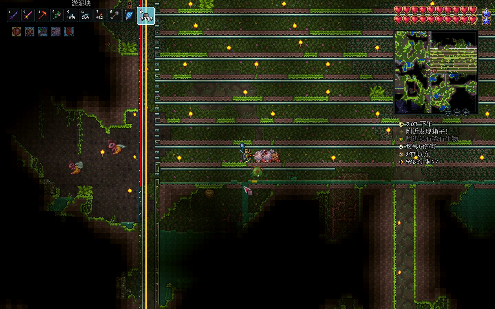
Figure 6: 生命果农场，也可以刷世花花苞
- 生命果生成：最大可以每隔60格生成一个，所以需要经常去刷刷，财力充足可以加虚化器一键收割，只不过有点难找掉落物（或许应当铺上人工墙？）
- 生命果农场实际上也可以不用建，保障你的挖矿药足够，防御力够高就可以勇闯肉后丛林（主要是生命果农场效率有些堪忧，性价比较低，这里仅作示范）
3.5.1. 草药农场
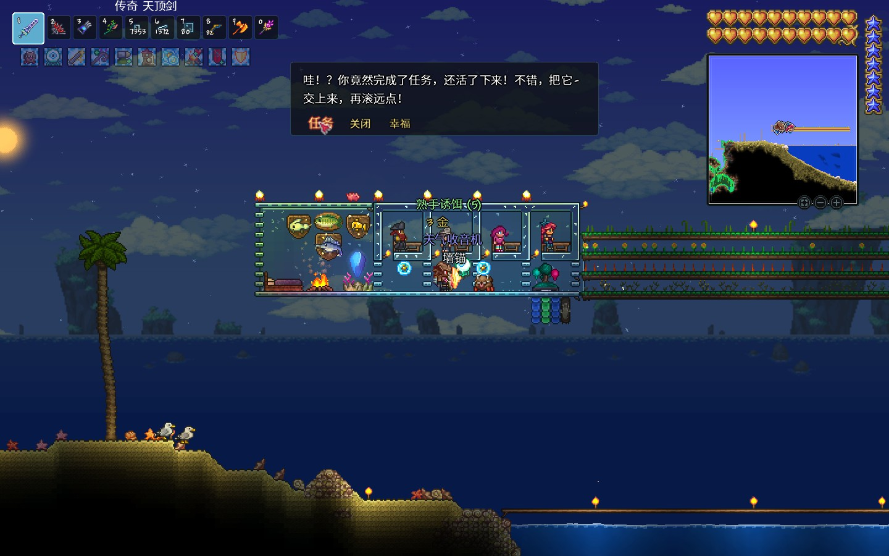
用利用树妖买的盆栽和丛林开出的再生法杖种植（建议建在海洋城镇外侧，刷怪少空间大），以下是部分草药和药水相关信息（加号表示有）:
| 药水/草药 | 太阳花 | 月光草 | 火焰花 | 闪耀根 | 寒颤棘 | 雏菊/水叶草 | 备注 |
|---|---|---|---|---|---|---|---|
| 铁皮药水（荐） | + | +8防御，需铁矿或铅矿 | |||||
| 再生药水 | + | +生命回复，还须蘑菇 | |||||
| 生命力药水 | + | + | + | +20%生命上限，还需要七彩矿鱼 | |||
| 耐力药水 | + | 10%减伤，还需装甲洞穴鱼 | |||||
| 敏捷药水 | + | +25%移速，还需要仙人掌 | |||||
| 重力药水 | + | + | 还需要死亡草和羽毛 | ||||
| 洞穴探险药水 | + | + | 探灵矿/叶绿矿/生命果，还须(铂)金矿 | ||||
| 危险感知药水 | + | ||||||
| 挖矿药水 | + | 还需要蚁狮上颚(沙漠) | |||||
| 夜猫子药水 | + | + | |||||
| 光芒药水 | + | 还需要发光蘑菇 | |||||
| 黑曜石皮药水 | + | + | 还需要黑曜石 | ||||
| 生物群系视觉药水 | + | + | + | 净化环境用 |
草药的生长特性（建议安装开头说的汉化包，在再生之斧或者再生法杖的介绍会有讲解）：
| 草药 | 开花时间 | 原产地 | 经验 |
|---|---|---|---|
| 太阳花 | 白天(上午 4:30 至 下午 7:29) | 森林 | 产量大 |
| 月光草 | 夜间(下午 7:30 至 上午 4:29) | 丛林 | |
| 火焰花 | 不下雨的黄昏(下午3:45到7:30) | 地狱 | |
| 闪耀根 | 随机 | 地下 | 规模化的产量巨大 |
| 寒颤棘 | 随机开花且只开不闭 | 雪地 | 产量有点低 |
| 雏菊/水叶草 | 下雨时 | 地表沙漠 | 看天吃饭，建议提前保护 |
- 注：下面的BOSS战相关内容默认你有灵液、铁皮药水（如果没有附注，最好也拿个大饱食）
- 药水合成需要使用放在平台上的空瓶子或者炼药桌充当制作站，骷髅王后建议使用炼药桌省材料
- 更多的药水的合成配方可以拿着个水瓶去问向导（基本上草药合成都要用到水瓶）
- 饱食度的区别：1)吃得好、2)很满意、3)酒足饭饱
3.6. 三套刷怪场
如果看不懂最好还是自己去看看岛主的视频
BV1T1421872k
分别布局在家中直通车的洞穴层（不能放在地下层），家顶（地表，城镇环境用影烛消除），海边（刷哥布林或海盗等）（最后这个可选）
3.6.1. 刷怪机制
预先声明:坐标系使用的坐标原点均在玩家左上角
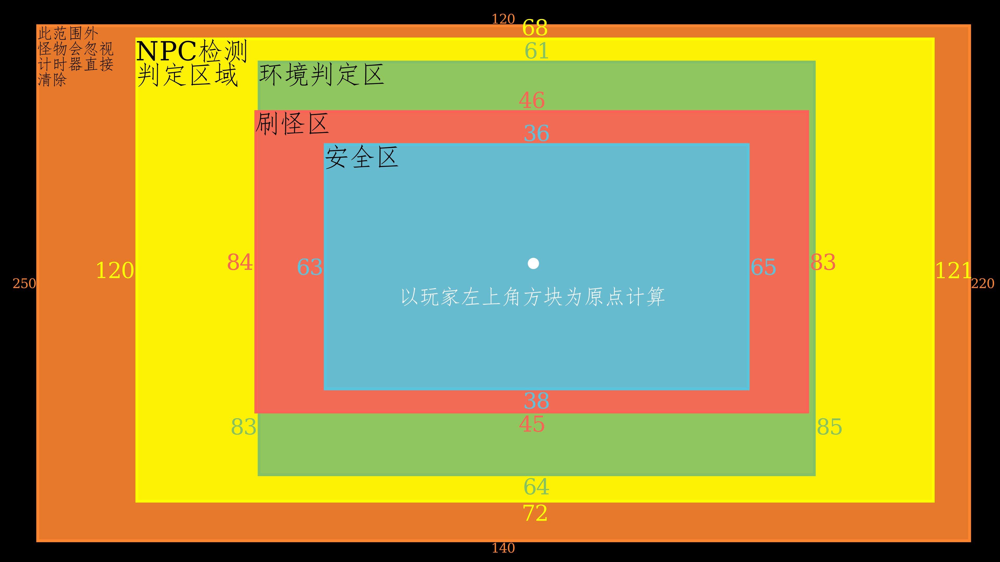
- 区域：建议在此基础上增加一些距离，为实际操作换取一些空间（如快速切换环境等）
- 安全区域:W63， N36， E65， S38
- 刷怪区域:W84， N46， E83， S45
- 环境判定:W83， N61， E85， S64，至少需清定此范围防环境污染
- NPC 检测:W120，N68， E121，S72，确保此范围内没有NPC，有则用影烛
- 删怪区域:W250，N120，E220，S140
- 刷怪尝试 刷怪区择非实非人工墙，下寻一块（普通方块或者平台皆可)检测位置(三格高，左侧没有方块）（即在左上右下向阶梯不刷怪)，后出
- 类型 方块（大多，丛林龟也是）、环境（冰雪龟）、墙怪（蜘蛛），环境+墙+方块（地牢）、其它（混沌精要影烛）
3.6.2. 环境构建
- 沙漠（需要有墙）1.5k物块，雪地1.5k
- 丛林250，地牢250（还要刷怪处有背景墙和方块，玩家在危险墙后）（墙分砖、板、瓷砖，战士只用砖墙）
- 神圣125，猩红300
蘑菇地100
防腐提示：雪地使用雪砖（2雪块合成）搭建可以防止腐化、敲新三矿不刷在里面
3.6.3. 特殊生物处理
法师会传送至记家6~20格范围内，空间宽3高4， 要有危险墙 ，用下面放泡泡上面倒岩浆处理
3.6.4. 刷怪场搭建
- 场地框架搭建：清空环境区域，并向多个方向多清理几格，建立如图所示的框架，建议用方块围下外框架。
- 刷怪区域处理：刷怪区用下半砖铺以激活（肉后）小宝箱怪，下方速移平台为向右倒斜坡（面向右下角）实体方块替换为防岩浆平台（如石砖平台），怪下平台会被速移。
- 放置环境：实际上只需要猩红雪地和地牢三种环境即可
- 物块准备：准备淤泥块，丛林和蘑菇草种，大理石块，猩红石块，地牢砖用于刷方块怪
- 邪恶类型方块使用注意：肉后邪恶方块会感染6格范围内的方块，所以请务必确保方块周边6格内没有可以感染的方块防范感染
- 附加物件：
- 放置一个箱子存刷怪方块，顺便让仙灵（会降低刷怪率）能被快速刷掉
- 放床和利器站等加成类家具，方便挂了也能原地复活
放置水蜡烛和影烛，水蜡烛常驻，影烛常闭
- 2025.03.01注：旧的刷怪场截图被移除了，我用一张新的整体带注释大图替代（下图）
- 相较于旧版半砖传怪，传送机式在刷腐化者、马蜂等飞行目标时更加方便（因为跑不掉）
2025.08.07更新：刷怪场的全景图进行了替换，使用了png格式的系统截图代替steam的 jpg截图合成底图，让画面更干净，同时在叠加注释时对底图进行了无插值2倍缩放，同时对注释字体进行了重新布局，克制了字体颜色的使用转为黑白两色，更方便观看。
Figure 7: 竣工整体图兼文字注释，仅供参考

3.6.5. 刷怪场的使用
- 近战刷怪最好使用长矛类武器（因为无限穿透效率高），如暗影长戟（地狱箱开出）、永恒之枪（神圣锭合成）、黑曜石剑鱼（岩浆钓鱼）
- 保持猩红环境常驻
- 将环境方块挖掉一角可以取消环境，方便随时添加
- 可以在右侧房间放置多个箱子，用来存储环境方块，刷怪产生的旗帜和一些过多难以携带的垃圾物品
3.6.6. 地表刷怪
丢掉环境部分，场地如法炮制，需要注意的是地表有刷哥布林袭击的需求，然而哥布林法师传送并不会只传在什么危险墙后，所以需要做好防范法师传送的工作。
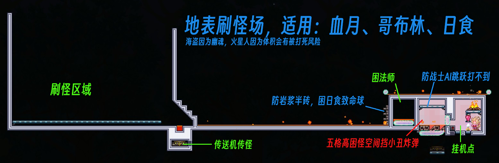
上述图片是供骷髅王后甚至是肉后的设计，如果需要在初期使用请参考下面这张图
4. 肉后
4.1. 过肉山
在地狱搭建三分之一到二分之一世界宽（中世界）铁轨，把握好距离，可用永夜剑轻松过（47防）
4.2. 过渡时期
再次强调，由于猩红挡的战士需要使用猩红钥匙获得吸血鬼刀，需要在猩红环境大量刷怪，故需要保持猩红环境常驻。出了钥匙之后再切换神圣环境钓鱼。
4.2.1. 获取武器装备/npc
- 刷怪场刷猩红怪取灵液和魂，利用装置无伤猩红宝箱怪取臭虎爪和血指虎
- 缺蛛洞搞黑隐士刷蜘蛛牙搞召唤物（武器），去搞祭坛取灵矿！尽可能多敲但留点（合成）。
- 做矿洞探险药水去挖矿（逐级向上，地狱熔炉->秘银砧->精金熔炉）做出精金套和精金/钛金熔炉
- 刷怪场找巫师，丛林城镇增加蘑菇环境（可从树妖购买蘑菇草种丢微光合成丛林草种）顺便拿个松露人
- 搞齐常驻buff家具（商人：利器站，军火商：弹药匣，巫医：施法桌（如果存在巫师））
4.2.2. 获取饰品/工具
- 去刷怪场：
- 环境
- 猩红环境常驻刷猩红钥匙（要不然花后拿不了吸血刃）
- 挂雪地环境刷冰龟壳（可叠加猩红环境）
- 刷怪方块
- 铺血腥块刷灵液
- 铺普通物块刷一般洞穴怪、宝箱怪获取十字项链和部分十字盾材料
- 铺丛林草刷丛林陆龟（海龟壳x3）（无需丛林环境）
- 环境
- 去神圣地地表刷精灵（是方块怪并非环境怪）取精灵尘（不会飞）与快走时钟。去太空用克盾逆向来回绕龙（类似于8字）取飞翔之魂制翼。
- 搭建腐化环境打吞噬者拿到蠕虫围巾
- 在树妖处搭建墓地环境可购买腐化草种，放沙子在腐化泥土上方便感染，并用腐化沙合成邪水瓶
- 去猩红地拿邪水瓶砸血菇变成邪菇，凑够6个合成30个毒粉（有炼药桌可以省点材料合成40个）
- 刷怪场刷怪处放腐化沙子刷腐化者获取15个腐肉（顺便刷维生素、蒙眼布）
- 猩红祭坛合成召唤世吞召唤物
- 营造一个稳定的腐化环境（否则会脱战）
- 做出十字盾（刷怪场刷怪搞材料），以下为材料
- 黑曜石护盾
- 十字章护身符（最子集两种材料可以互相转化）
- 反光墨镜
- 蒙眼布：邪恶史莱姆（邪恶石块可刷）、邪恶木乃伊（邪恶感染的沙块可刷）
- 袖珍镜：蛇发女妖（大理石可刷）（推荐）
- 盔甲背带
- 维生素：腐化者、恶心浮游怪（穿墙怪）
- 盔甲抛光剂：(蓝)装甲骷髅（普通洞穴可刷）（推荐）
- 药用绷带
- 粘性绷带：狼人（建议和月光护身符一起刷）……
- 牛黄：毒泥、(苔藓)黄蜂（丛林泥块可刷）（推荐）
- 反诅咒咒语
- 邪眼：猩红斧、附魔剑、诅咒骷髅头（肉前地牢有）
- 扩音器：妖精（建议和妖精尘一起刷）、邪恶木乃伊（刷腐肉时顺便刷）（推荐x2）
- 计划书
- 三折地图：光明木乃伊6、巨型蝙蝠（推荐）
- 快走时钟：妖精（建议和扩音器一起刷）（推荐）、木乃伊
- 反光墨镜
- 满月去地表刷怪场刷狼人搞月光护符（建议同时召唤血月增加刷怪率）
- 从奸商那儿买铁钻丢微光换铁，用椎骨等合成铁长直召唤物。
- 海盗事件：去海边刷血月刷海盗地图（海边敌怪1%概率掉落）（有海边刷怪场更好），打海盗事件，打出三个饰品合成出赚钱利器
- 掏出刃杖（这个要打史后掉），掏出蜘蛛套，掏出宏伟蓝图和岛主牌刷钱机，
591铂金，60金15银3铜，我来啦！（刷钱机建不建看情况）
- 掏出刃杖（这个要打史后掉），掏出蜘蛛套，掏出宏伟蓝图和岛主牌刷钱机，
史莱姆皇后：神圣洞穴挖明胶水晶神圣地表召唤（建议打完铁长直再来打，放在这里只是因为篇章结构限制）
4.3. 新三王
4.3.1. 铁长直/毁灭者
- 摆上猫雕，做铁皮药，磕点灵液
- 精金套108防（吃个饱食防御更高）。
- 十字盾、克盾（或夜光护符）、克脑、围巾、狂战士手套、血肉指虎、星星面纱
注：饰品不要取巧，98防和108防差很多的。
- 十字盾、克盾（或夜光护符）、克脑、围巾、狂战士手套、血肉指虎、星星面纱
- 躲开头部攻击后，追着挨打骗伤拿臭虎爪输出，取神圣锭做能神圣套和光辉飞盘
- 可以开全屏的小地图判断攻击方向好躲头
实际上由于铁长直不会飞，可以通过在高空星星斗篷+雕像骗伤用落星打铁长直逃课
又由于铁长直不会因为距离脱战，所以能用海螺传送进行车轮战逃课
4.3.2. 双子魔眼
- 建议打下史后拿史后鞍打以弥补全防饰品的机动性不足问题，顺便掏个刃杖
- 配置除了换战士神圣套和换更好的召唤物外没有太大的区别（实际上我也不太熟怎么走位）
- 经过实践，大致为优先打魔焰眼，喷火时向一个方向拉，冲撞时反转方向，二阶段在喷火前利用史后ang上下移动快的特性，快速上爬或者下落躲开
- 激光眼一阶段小心点，二阶段直接勾爪勾住平台替换成方块用光辉飞盘打
4.3.3. 铁吴克/机械骷髅王
- 和吴克差不多，不过远程用光辉飞盘，近战用圣剑打
- 和吴克差不多，不要打到4:30a.m.天亮，要不然等待的不是脱战而是滚筒洗衣机+你的坟
- 和吴克不一样的，不用优先拆手
- 和吴克不一样的，需要小心高伤炸弹
4.4. 世纪之花
- 挖叶绿矿（总计需要480个叶绿矿，即54+24+18个叶绿锭）
- 合成真永夜、真圣剑（24个叶绿锭）
- 做海龟套（54个叶绿锭）（须刷丛林海龟）
- 狂战士手套，冰龟壳，十字盾，星星面纱，围巾，克脑，血肉指虎
- 词缀全护佑
- 注：饰品不要取巧，实操时可以等到快没血时再磕血药而非是半血以上磕
- 丢一个生命果到微光变成神盾果吃了加4防御
- 狂战士手套，冰龟壳，十字盾，星星面纱，围巾，克脑，血肉指虎
- 带上臭虎爪往蜂蜜里一站，站撸世花
- 药品：培根（找排队女孩要）、铁皮药水
- 血量上限：亲测430HP可过
- 场地：蜂蜜1格（用3格泡泡放）、猫神雕像，把自己围一下
- 技巧：有冰龟壳时血量低时可不着急吃药
- 注：大师单人世花53550HP，双人72292HP，如果一个人想站撸双人世花是有点危险的
4.5. 花后/石前
- 第一时间去地牢取战士玩具“吸血鬼刀”
- （选做）找蘑菇人买自动锤炼机做出蘑菇挖矿爪（需要叶绿锭->蘑菇锭18个）
- 地表刷怪场刷日食蛾怪（用吸血鬼刀）合出泰拉刃（真永夜+真圣剑+英雄断剑）（顺便刷蛾怪之翼等）
- 刷日食还须刷
月亮石和海神贝壳
- 刷日食还须刷
- 洞穴刷怪场刷地牢怪（圣骑士:圣骑士盾两个）（李小龙：忍者大师材料黑裤袜和黑腰带）
- 合成（圣骑士盾冰龟壳）冰盾、（圣骑士盾+血肉指虎）英雄盾、忍者大师装备
- 把克盾换成忍者大师
- 如果刷出狙击步枪或者火箭发射器不要丢（打四柱偷懒用）（如果追求纯战士的话可以刷火星人拿波涌之刃）
4.6. 石巨人
- 需要在丛林神庙最里面的房间用神庙电池对着祭坛使用召唤
- 电池在神庙箱或者刷怪可以拿到
- 进入神庙建议用炸弹之类的把陷阱和尖刺炸掉或者挖掉，用吸血鬼刃回血逐层推进
- 本身很好打，不多言
- 目标
- 刷太阳石合成天界贝壳（天界护符）(可能需要刷挺久)
- 配方：{月光护符（狼人）+海神贝壳（日食）}+{月亮石（日食）+太阳石（石巨人）}
- 合成甲虫套（但不急）
- 搞到闪亮石（如果要站撸月总）
- 刷太阳石合成天界贝壳（天界护符）(可能需要刷挺久)
- 用吸血鬼刃站撸猪鲨（刷怪场抓松露虫）
- 装备：海龟套（不用甲虫套）
- 饰品：英雄盾，冰盾，天界贝壳，星星面纱，围巾，克脑，忍者大师
- 场地：海面上建个宽约9格间距7格的天花板和地板，配上篝火、心灯、猫神雕像
- 技巧：用"5-3-反"规律精准瞄准，否则也会炸（说白了就是背板）
- 一阶段会左右冲撞5次后停下来释放技能
- 二阶段会左右冲撞3次后停下来释放技能
- 三阶段会冲撞几次然后传送到玩家另一侧继续冲刺（反正就是在传送时改变攻击方向）
- 拿到松虾露（无限飞行坐骑）就好，有实力的可以试试刷个翅膀
- 夜间光女站撸同理（别想着白天了）
- 七彩草蛉在7:30 p.m.到12:00 a.m.之间的神圣地表刷出
- 如果需要机动性请拿到飞升之证
- 经旅行模式测试，在月亮事件期间仍旧能够刷七彩草蛉
4.7. 教徒前的准备
由于打完拜月教徒会触发月亮事件，此时无法玩家无法入睡加速时间（不要困惑为什么睡不了觉）
进行此章节内容时，请不要打拜月教徒。
4.7.1. 站撸月总准备
如果需要站撸月总，请进行此部分的准备，其他的不用(个人感觉最后还是套点机动性再正常打月总比较好)
- 如果需要使用站撸方案，请在打击完成前请确保(!!!)已经准备好以下药水：
铁皮药水再生药水（需要准备蘑菇）生命力药水（需要去神圣环境钓七彩矿鱼）耐力药水（需要在洞穴钓洞穴装甲鱼）任意食物（专家大师没有食物生命恢复速度减半）
站撸需要迅速回血，请在打石巨人时获取 闪亮石 。
- 打击完成之前需要建个定制的小房间用于站撸月总（如图）
要素：猫雕、篝火、心灯
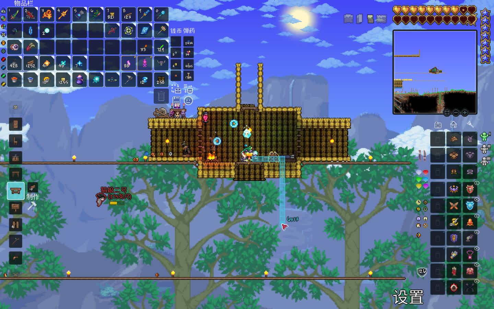
4.7.2. 正常打月总准备
准备好战斗药水（铁皮 再生 生命力 耐力，不强制要求）、敏捷药水，最好打光女获取飞升之证，选用一个机动性不错的翅膀（光女猪鲨掉的，也可以用日食飞蛾掉的）
4.8. 教徒/四柱
- 地牢门口可站撸教徒，四柱伤害比较高有点难站撸，需要些技巧（引用下岛主的视频
BV1HP4y127Wc） - 建议先打日曜柱取武器，打星尘柱做召唤物
- 四柱特点
- 共性：月前需要击杀100个对应敌怪破盾再攻击本体，退出重进存档会重置剩余柱子的护盾数和本体血量
- 日耀柱：战士，柱子本身不会召唤怪，禁飞（有个千足蜈蚣异常恐怖）
- 星旋柱：射手，无穿墙怪
- 星云柱：法师，柱子本身不会召唤怪
- 星尘柱：召唤师，有个星尘细胞死后会分裂成小细胞再长成大细胞并且不会穿墙，可以拉到场地外无限打
- 打击策略：
- 通用
- 靠近柱子刷怪可以用返回药水之类的把怪刷掉
- 刷怪计数就算是在环境外也是计算的
- 充分利用泰拉的刷怪机制:
- 空中进近（使用无限飞坐骑或者飞升之证+翅膀），避免刷怪
- 自建可控的小场地（一般都是卡四柱环境边缘）
- 四柱的环境边缘是一个球形需要注意
- 远程把柱子狙击掉（使用能够移动特别远的弹幕）
- 日耀柱：
- 进近：高空靠近（用猪鲨坐骑之类的）环境边缘，用巫师卖的法杖或者机械师卖的分线盒空中放方块搭场地（遵循基本刷怪范围原则）
- 场地：在远离柱子范围一侧搭刷怪区（在范围外）（搭建的过程就不会刷日曜怪），用高点的柱子围起来（顶端向内翘几格），挂机区域（在范围内）用平台
- 拆塔：因为塔本身不会召唤怪，在塔顶一定距离时（因为附近没有方块）不会刷怪，可以直接拆
- 日曜喷发剑、破晓之光的最佳修饰语都是神级（合成站：远古操纵机）
- 星尘柱（召唤师）可以尝试养细胞（进场地刷出一个细胞就走）
- 养细胞：
- 过滤样本：经测试，星尘柱会召唤怪，单次召唤一只。可以选择高空进近然后在不刷怪让它召唤一个，是细胞就带走，否则就返回药水跑路。如果就是想要直接勾引，勾出了不是细胞的敌怪，用翅膀跑快点就能甩掉，细胞则没有那么容易丢。（对精准度有自信的可以硬刚）
- 处理：找到一块合适的地方迅速降落往下挖两格宽的通道不用封口，星尘细胞进不来。之后用武器慢慢刷就好，当没看到有红线飞向塔身后就意味着破盾了（或者刷两个大星辰细胞的旗子）。剩余的星尘细胞用喷发剑处理即可。
- 拆塔：可以用狙击步枪或者火箭发射器（地牢刷）在范围外把塔炸了（因为弹幕不受重力影响且射程远）（也没说真的纯战士啊）
- 拆完可以做星尘细胞、星尘龙之类的
- 养细胞：
- 星旋柱（射手）怪物不会穿墙，就地挖坑埋起来(记得封口)用日曜剑穿墙打即可
- 不要在核心区打，因为柱子本身会召唤怪，传送门会开到你头上
- 星云柱（法师）比较恶心，需要谨慎对待空中建六边形小房间，星云浮怪就不会进行远程攻击
进近：同样高空靠近摸清柱子环境边缘，在远离柱子的那侧施工搭出一个小平台再向上搭高，在非刷怪区建一个内部3x3的小房间，然后将多余的部分挖掉，如图所示（请确保自己站在建好的房间的中间时在柱子环境内）
. ##### # # . # # . # # -> # ^ # . # # . ##### # # . . 或者用平台从内往外搭建（留个平台用来补方块）： . . #_# # # # # . _ . #___# -> ^ _ # -> #_^ # . _ . #_# # # # # . . ^ 代表人（你自己）
- 打击：用日曜喷发剑隔墙打
- 晋级：把斜对角挖掉形成六边形小房间，如此星云浮怪就不会贴脸
- 通用
4.9. 月总/月亮领主
由于走位的打法只要顺着月总的激光往它头上一转就可过了，过于简单就不说了，这里只说站撸的办法：
- 打完最后一个柱子就只有1分钟的准备时间，需要：
- 做200血大血药：
- 材料：四柱碎片、150血强效回血（大宝箱怪会掉）
- 合成站：放置的玻璃瓶/炼药桌（不是远古操纵机）
- 带上铁皮药水、再生药水、生命力药水、耐力药水
- 做200血大血药：
- 打法
- 装备：天界壳、闪亮石、冰盾(红盾)、围巾、面纱、克脑、忍者大师
- 场地：预制的房间内（如图），抗伤站撸（吸血鬼刀用不了）。
- 输出：破晓之光
- 时间：夜间蹭天界壳加成
- 由于站撸依赖回血，所以不要吃饱食
- 去打上面和右边的眼睛，最后打左眼（左眼拿来骗伤的），半血了就停下等闪亮石回血，满血了再输出。
把上面的眼睛释放后就可以在头顶放方块堵下激光
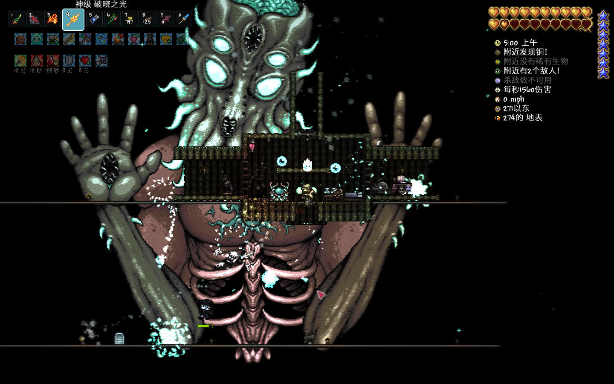
4.10. 天顶剑
月后无敌，日耀套、天界飞盘，自备材料自己做
材料：铜短剑、附魔剑、星怒、养蜂人（蜂后）、泰拉刃、无头骑士剑（南瓜月）、波涌剑（火星人）、喵刀（月总）、狂星之怒（月总）
5. Reference
BV1v44y1x7qA【泰拉瑞亚】世界最详细新手教程！全流程机制详解BV1NhwCebE5Q【熟肉】TR高手专用的大前期速通技巧BV1WS411c74T这是一个有效的监狱，防治污染就得懂得机制BV1vC411J7dP笨蛋蜂后好欺负，往返床术得记住BV1dy411q78A王中王，八中八，成长爆表战士最强BV1kD421L7W5从宇宙大爆炸开始教你做刷怪场——岛牌刷怪场3.3BV1T1421872k【岛牌3.4】求求泰君们认真上课，不要再犯典型错误了😭BV1nM411M7JR【泰拉瑞亚实用知识】1：多 功 能 刷 怪 场BV1T14y1h7EY【全平台通用】萌新必学，几个方块拿捏环境宝箱怪BV1iE421F7X9缺钱？速来挂机刷铂金币！BV1HP4y127Wc【泰拉瑞亚】[完结]144最新超详细全方位教程，大师模式原来也这么简单!(P15)百度贴吧【科普&详解】为什么你的房子不合格？官方维基官方中文泰拉瑞亚维基百科（The Official Chinese Terraria Wiki） - 最详细的中文泰拉瑞亚百科
1.4.5新东西:
BV18AfoB9EpZ【泰拉瑞亚】C型凹槽终极、Plus、Pro、Max、Ultra版来啦！